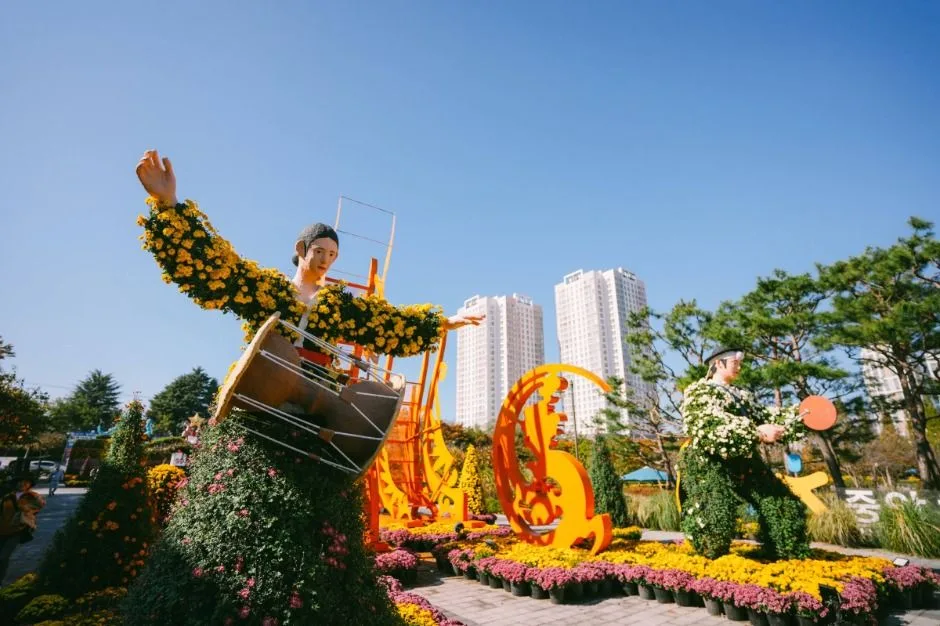
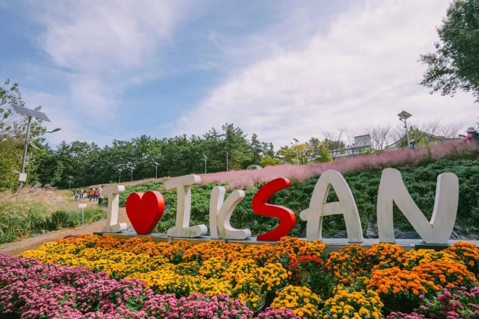
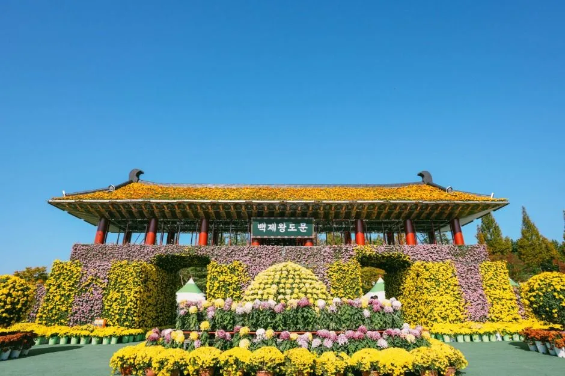
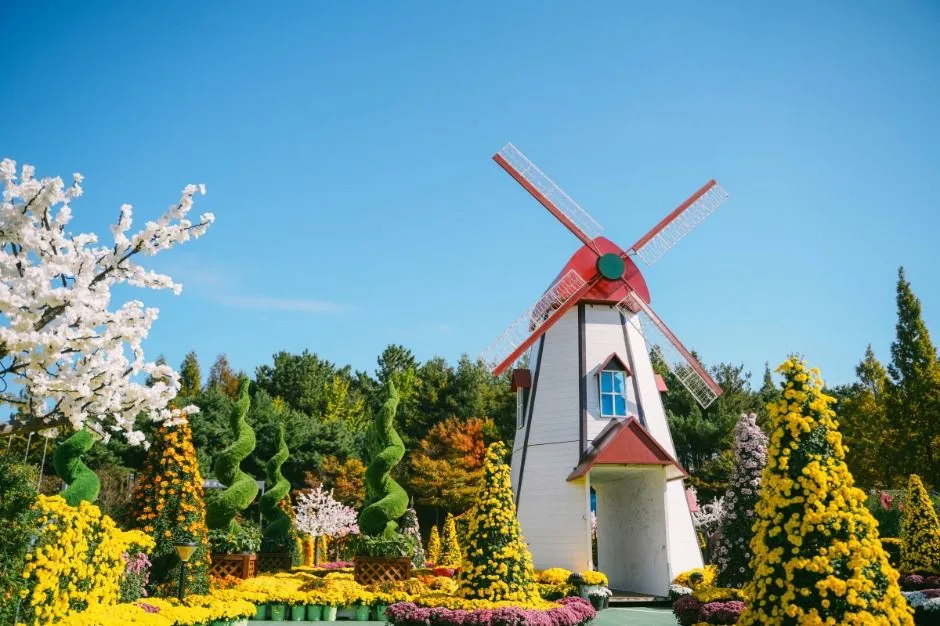
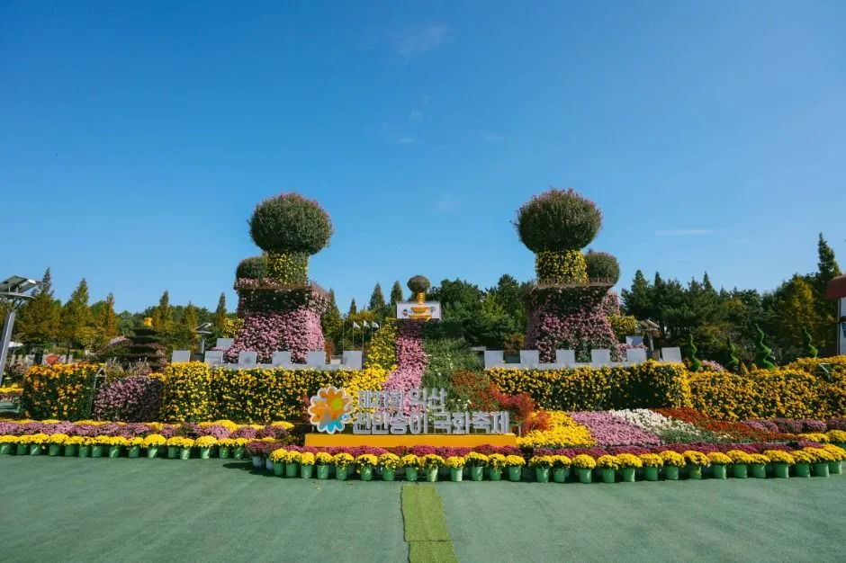
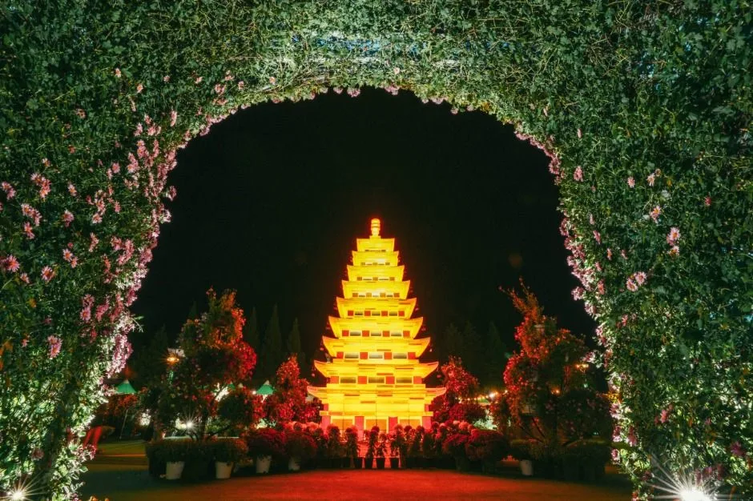
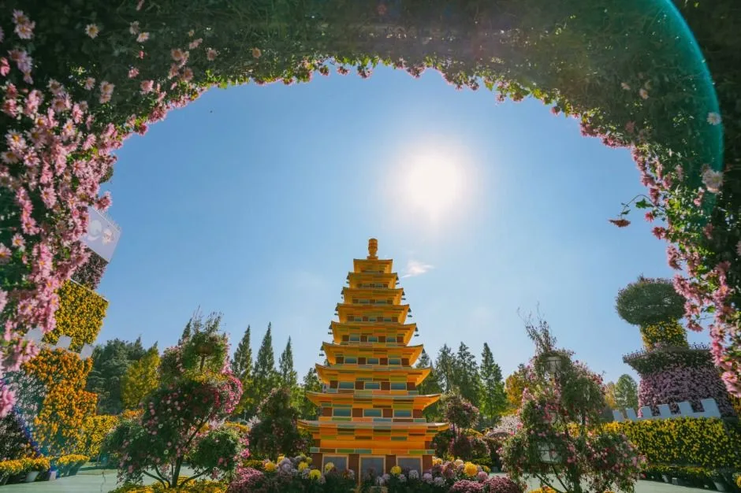
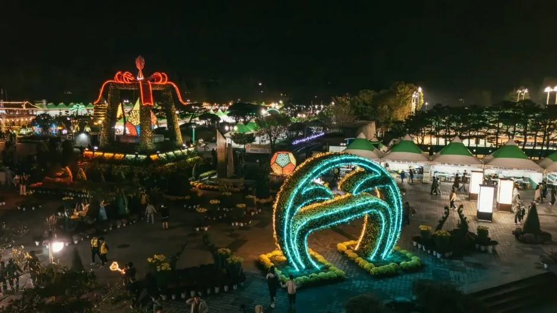

▲ 익산 국화축제의 국화 조형물. 백제 테마의 대형 작품들이 축제의 핵심 볼거리다 ⓒ 한국관광공사
익산 천만송이 국화축제가 10월 24일(토)부터 11월 2일(월)까지 10일간 익산시 중앙체육공원(하나로 322)에서 열린다. 지난해 제22회 행사에는 10일간 76만 명이 다녀갔다. 무료 입장이라는 접근성이 오히려 특정 시간대에 방문객을 몰리게 만드는 구조를 만든다.
1. 무료라서 몰린다 — 76만 명의 의미

▲ 축제장의 'I LOVE IKSAN' 포토존. 무료 입장이라는 접근성 덕에 방문객이 꾸준히 몰린다 ⓒ 한국관광공사
입장료가 없다는 것은 방문객에게는 장점이지만, 혼잡 관리 측면에서는 다른 문제를 만든다. 예약이나 입장 인원 제한이 없는 만큼, 주말이나 야간 경관 조명이 켜지는 저녁 시간대에 방문객이 집중되는 경향이 뚜렷하다. 76만 명이라는 숫자는 10일간의 누적치이지만, 실제로는 특정 날짜와 시간대에 쏠림이 발생한다는 뜻이다.

▲ 국화로 뒤덮인 백제 양식 전통 건물 조형물. 낮 시간대에는 이런 대형 구조물의 디테일을 가까이서 볼 수 있다 ⓒ 한국관광공사
2. 대형 조형물과 야간 경관

▲ 축제장의 풍차 조형물. 국화 화분과 다양한 화훼로 구성된 테마 전시가 곳곳에 배치된다 ⓒ 한국관광공사
축제의 핵심은 선물상자, 케이크, 봉황, 백제 왕도 문장, 쌍룡 등 다양한 형태로 만든 대형 국화 조형물이다. 전국 최대 규모의 국화정원, 국화분재 특별전시, 음악분수도 함께 운영된다. 밤에는 움직이는 빛 조형물과 국화 빛 터널 같은 야간 경관이 더해져, 낮과 밤의 분위기가 크게 다르다.

▲ 낮 시간에 본 토피어리 조형물. 국화 외에도 다양한 화훼로 꾸민 테마 전시가 곳곳에 배치돼 있다 ⓒ 한국관광공사

▲ 야간 조명이 켜진 국화 터널. 황금빛으로 빛나는 탑 조형물이 터널 끝에 자리한다 ⓒ 한국관광공사
3. 낮과 밤, 언제 가야 할까

▲ 국화 아치 너머로 보이는 백제 양식 탑 조형물. 낮에는 조형물의 디테일이, 밤에는 조명 연출이 다른 매력을 준다 ⓒ 한국관광공사
참고 야간 경관을 보려면 해가 완전히 진 뒤 방문해야 하지만, 이 시간대는 저녁 식사 이후 나들이객이 몰리는 시간과 겹친다. 낮 시간대 중에서는 이른 오전이 상대적으로 여유롭다.
조형물을 자세히 살펴보고 사진을 찍고 싶다면 개장 직후인 이른 오전이 유리하다. 반면 조명과 분수가 어우러진 야경을 목적으로 한다면 해 진 직후보다 조금 늦은 시간대가 초입 혼잡을 피하는 데 도움이 된다.

▲ 조명이 켜진 야간 아치 구조물. 해가 완전히 진 뒤에야 이런 화려한 야경을 볼 수 있다 ⓒ 한국관광공사
4. 정리
체크포인트
- 입장은 무료지만 예약제가 없어 특정 시간대 쏠림이 발생한다.
- 지난해 10일간 76만 명이 방문한 규모 있는 축제다.
- 조형물 사진 목적이라면 이른 오전, 야경이 목적이라면 해 진 직후를 살짝 피한 시간대가 유리하다.
- 장소는 중앙체육공원(익산시 하나로 322)이다.
문의는 익산시 축제 담당 063-859-4977, 4334다.